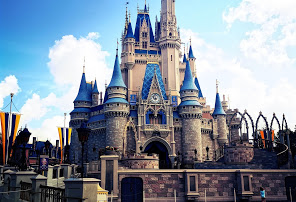
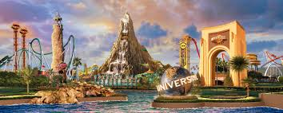
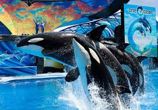

Walt Disney World

Walt Disney World Resort, comumente conhecido como Walt Disney World e informalmente Disney World,
é o resort de entretenimento mais visitado em todo o mundo, situado em Bay Lake, Flórida,
próxima a cidade de Orlando. O resort foi aberto em 1 de outubro de 1971 e recebe anualmente mais
de 52 milhões de pessoas em seus parques temáticos e hóteis.
Site Walt Disney World
Universal Orlando Resort

O Universal Orlando Resort é um grande complexo de parques temáticos e resorts que pertence a
NBC Universal e Blackstone Group, localizado na cidade de Orlando, Florida. É formado por três
parques principais: o Universal Studios Florida, Islands of Adventure e o parque aquático Volcano Bay.
Site Universal Orlando Resort
SeaWorld Orlando

SeaWorld Orlando é um parque temático e zoológico baseado principalmente na vida marinha,
localizado perto de Orlando, Flórida. O parque pertence e é operado pela SeaWorld Parks & Entertainment,
uma subsidiária da The Blackstone Group
Site SeaWorld Orlando